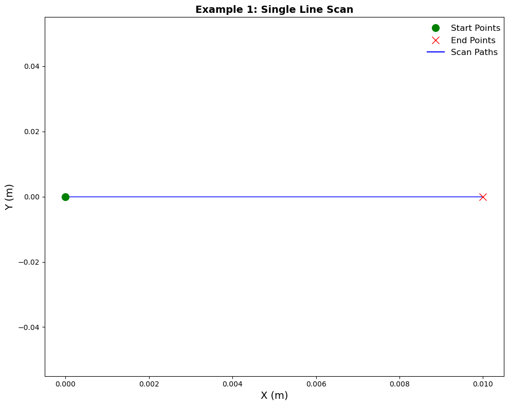
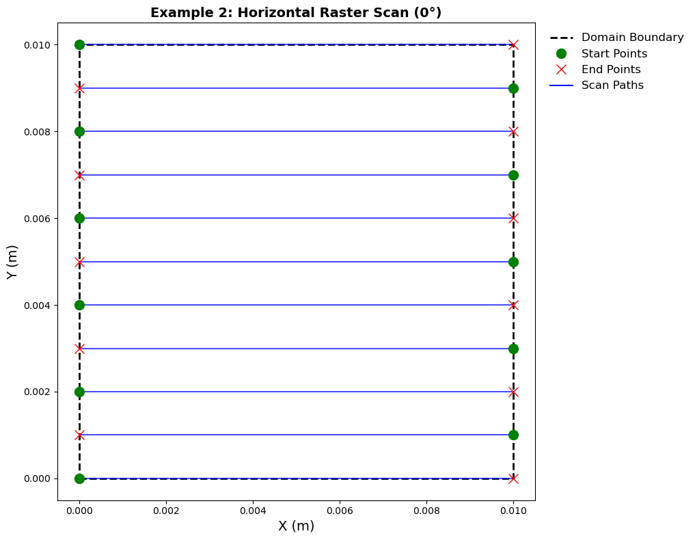
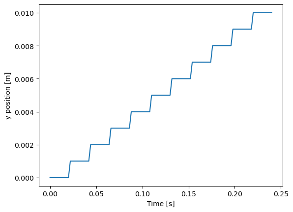
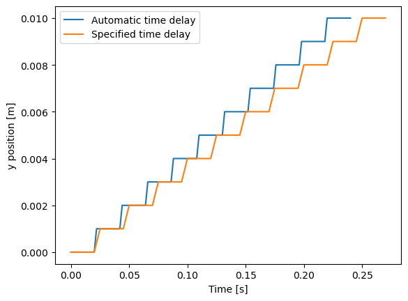
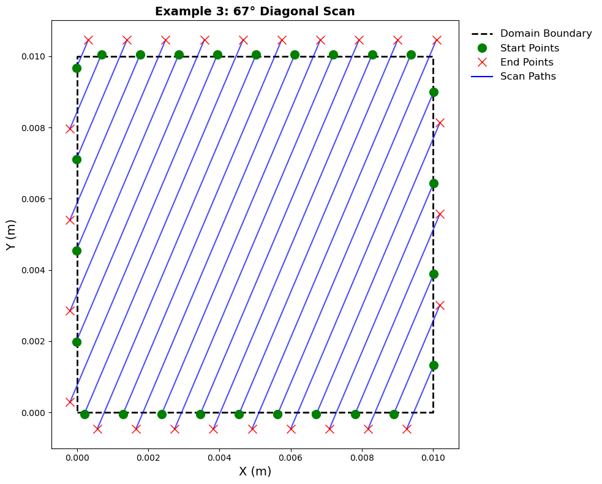
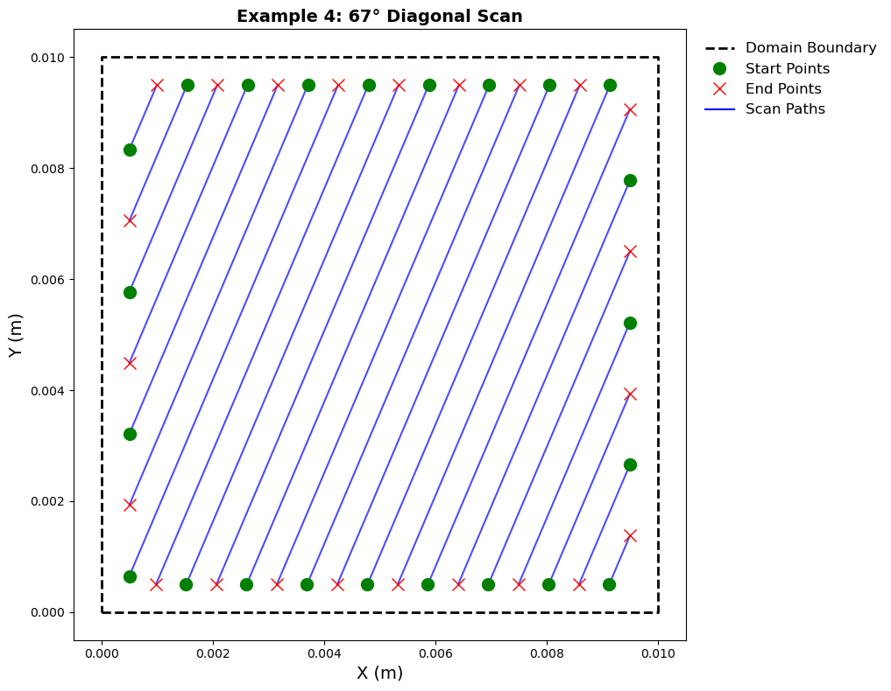
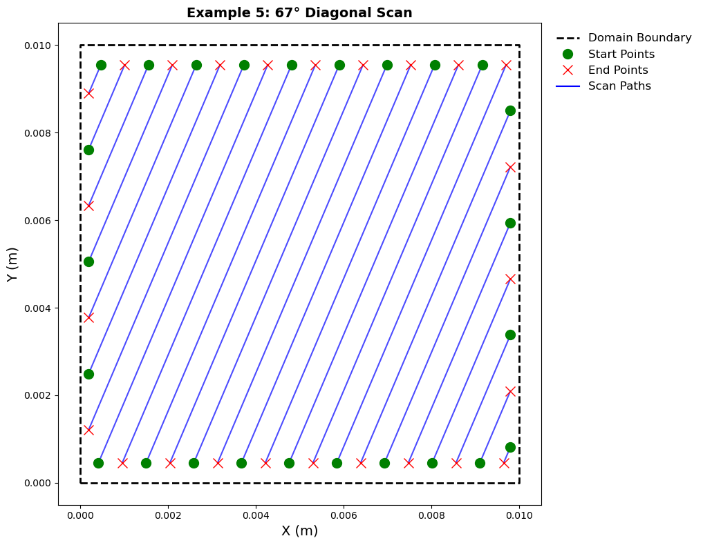
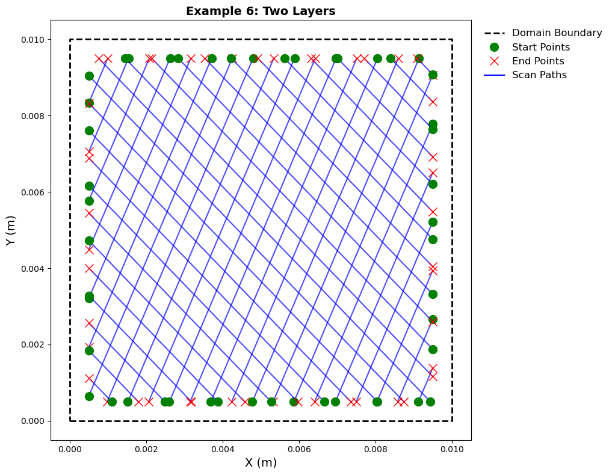

LaserPath Demo#
This notebook demonstrates the LaserPath class. Paths include a single line scan and raster scan patterns at arbitrary angles in the x-y plane.
import numpy as np
import matplotlib.pyplot as plt
from materialite.models.laser_path import LaserPath
Create a helper function to visualize the laser scan paths.
def plot_laser_path(path, x_bounds=None, y_bounds=None, title="Laser Scan Path"):
"""
Visualize a laser scan path.
Parameters
----------
path : LaserPath
The laser path to visualize.
x_bounds : tuple
(x_min, x_max) bounds of the domain.
y_bounds : tuple
(y_min, y_max) bounds of the domain.
title : str
Title for the plot.
"""
fig, ax = plt.subplots(figsize=(10, 8))
# Plot the domain boundary
if x_bounds is not None and y_bounds is not None:
x_min, x_max = x_bounds
y_min, y_max = y_bounds
ax.plot(
[x_min, x_max, x_max, x_min, x_min],
[y_min, y_min, y_max, y_max, y_min],
"k--",
linewidth=2,
label="Domain Boundary",
)
# Plot each scan segment
for i in range(path.n_scans):
start = path.start_positions[i]
end = path.end_positions[i]
# Plot the scan line
ax.plot([start[0], end[0]], [start[1], end[1]], "b-", linewidth=1.5, alpha=0.7)
# Mark start and end points
ax.plot(start[0], start[1], "go", markersize=10)
ax.plot(end[0], end[1], "rx", markersize=10)
# Add legend (only once for start/end points)
ax.plot([], [], "go", markersize=10, label="Start Points")
ax.plot([], [], "rx", markersize=10, label="End Points")
ax.plot([], [], "b-", linewidth=1.5, label="Scan Paths")
ax.set_xlabel("X (m)", fontsize=14)
ax.set_ylabel("Y (m)", fontsize=14)
ax.set_title(title, fontsize=14, fontweight="bold")
ax.legend(fontsize=12, bbox_to_anchor=(1.01, 1), frameon=False)
if x_bounds is not None and y_bounds is not None:
ax.set_aspect("equal")
plt.tight_layout()
plt.show()
# Print some info
print(f"Number of scan segments: {path.n_scans}")
print(f"Total scan time: {path.total_time:.6f} s")
print(
f"Total scan distance: {sum([np.linalg.norm(path.end_positions[i] - path.start_positions[i]) for i in range(path.n_scans)]):.6f} m"
)
Example 1: Single line scan#
Create a line scan by specifying the start point, end point, laser power, and scan velocity.
path = LaserPath.single_line_scan(
start=[0, 0, 0], end=[0.01, 0, 0], velocity=1.0, power=300
)
plot_laser_path(path, title="Example 1: Single Line Scan")

Number of scan segments: 1
Total scan time: 0.010000 s
Total scan distance: 0.010000 m
Example 2: Horizontal Raster Scan (\(0^\circ\))#
This example creates a horizontal raster scan across a 10 mm \(\times\) 10 mm domain with 1 mm hatch spacing. The laser moves along the x-axis at 0.5 m/s.
# Create horizontal raster scan
path = LaserPath.angled_raster_scan(
angle=0,
hatch_spacing=0.001,
x_bounds=(0.0, 0.01),
y_bounds=(0.0, 0.01),
velocity=0.5,
power=300,
)
# Visualize the path
plot_laser_path(
path,
x_bounds=(0.0, 0.01),
y_bounds=(0.0, 0.01),
title="Example 2: Horizontal Raster Scan (0°)",
)

Number of scan segments: 11
Total scan time: 0.240000 s
Total scan distance: 0.110000 m
Get the laser position at specified times.
# Expected scans: 1, between 1 and 2, 2, 7, after the end of all scans
times = [0.01, 0.021, 0.022, 0.14, 0.25]
positions = path.get_position(times)
print("Positions at times", times)
print(positions)
Positions at times [0.01, 0.021, 0.022, 0.14, 0.25]
[[0.005 0. 0. ]
[ nan nan nan]
[0.01 0.001 0. ]
[0.004 0.006 0. ]
[ nan nan nan]]
The nans indicate times when the laser is off.
Plot the \(y\) position against time to show the time offset between scans.
times = []
locations = []
for i in range(path.n_scans):
times.append(path.start_times[i])
times.append(path.end_times[i])
locations.append(path.start_positions[i][1])
locations.append(path.end_positions[i][1])
fig, ax = plt.subplots()
ax.plot(times, locations)
ax.set_xlabel("Time [s]")
ax.set_ylabel("y position [m]")
Text(0, 0.5, 'y position [m]')

Compare with a case where the time delay between scans is specified.
# Create horizontal raster scan
path_offset = LaserPath.angled_raster_scan(
angle=0,
hatch_spacing=0.001,
x_bounds=(0.0, 0.01),
y_bounds=(0.0, 0.01),
velocity=0.5,
power=300,
delay_between_scans=0.005,
)
times_offset = []
locations_offset = []
for i in range(path_offset.n_scans):
times_offset.append(path_offset.start_times[i])
times_offset.append(path_offset.end_times[i])
locations_offset.append(path_offset.start_positions[i][1])
locations_offset.append(path_offset.end_positions[i][1])
fig, ax = plt.subplots()
ax.plot(times, locations, label="Automatic time delay")
ax.plot(times_offset, locations_offset, label="Specified time delay")
ax.legend()
ax.set_xlabel("Time [s]")
ax.set_ylabel("y position [m]")
Text(0, 0.5, 'y position [m]')

Analysis of Example 2#
Scan direction: Horizontal (\(0^\circ\) angle)
Bidirectional: Yes (alternating left-to-right and right-to-left)
Domain: 10 mm \(\times\) 10 mm square
Hatch spacing: 1 mm (distance between parallel scan lines)
Velocity: 0.5 m/s
Notice how the green start points alternate sides due to the bidirectional scanning pattern. This reduces the total travel time compared to unidirectional scanning.
Example 3: \(67^\circ\) Diagonal Scan with Offsets#
This example creates a \(67^\circ\) diagonal scan with offsets that extend the scan paths beyond the domain boundaries.
The offsets extend the scan a specified distance along the scan direction beyond the points where the scan intersects the domain boundary.
The start_offset is 0.05 mm, and the end_offset is 0.5 mm.
# Create 67° diagonal scan with asymmetric offsets
start_offset_value = 5.0e-5 # 0.05mm
end_offset_value = 10 * start_offset_value # 0.5mm
path = LaserPath.angled_raster_scan(
angle=67,
hatch_spacing=0.0005,
x_bounds=(0.0, 0.01),
y_bounds=(0.0, 0.01),
velocity=0.5,
power=300,
start_offset=start_offset_value,
end_offset=end_offset_value,
)
# Visualize the path
plot_laser_path(
path,
x_bounds=(0.0, 0.01),
y_bounds=(0.0, 0.01),
title=f"Example 3: 67° Diagonal Scan",
)

Number of scan segments: 26
Total scan time: 0.472120 s
Total scan distance: 0.214148 m
Verify that the hatch spacing is correct.
from materialite import Vector, Orientation
orientation = Orientation.from_euler_angles([67.0, 0, 0], in_degrees=True)
start = Vector(path.start_positions).rotate(orientation.inv)
end = Vector(path.end_positions).rotate(orientation.inv)
print(np.allclose(start.components[1:, 1] - start.components[:-1, 1], 0.0005))
print(np.allclose(start.components[1:, 1] - end.components[:-1, 1], 0.0005))
True
True
Analysis of Example 3#
Scan direction: \(67^\circ\) diagonal
Bidirectional: Yes
Domain: 10 mm \(\times\) 10 mm square
Hatch spacing: 0.5 mm (finer spacing than Example 1)
Velocity: 0.5 m/s
Start offset: 0.05 mm (extends scan start 0.05 mm before domain boundary)
End offset: 0.5 mm (extends scan end 0.5 mm beyond domain boundary)
The asymmetric offsets create noticeably longer extensions at the end of each scan (red points) compared to the start (green points). This can be useful for simulating laser turn-on/turn-off behavior or ensuring complete coverage at domain boundaries.
Examples 4-5: \(67^\circ\) Diagonal Scan with Negative Offsets#
This example creates a \(67^\circ\) diagonal scan with offsets that restrict the scan paths within the domain boundaries. First, the domain offset restricts scans to a distance from the domain boundary.
# Create 67° diagonal scan with negative domain offset
offset_value = 5.0e-4 # 0.5mm
path = LaserPath.angled_raster_scan(
angle=67,
hatch_spacing=0.0005,
x_bounds=(0.0, 0.01),
y_bounds=(0.0, 0.01),
velocity=0.5,
power=300,
domain_offset=-offset_value,
)
# Visualize the path
plot_laser_path(
path,
x_bounds=(0.0, 0.01),
y_bounds=(0.0, 0.01),
title=f"Example 4: 67° Diagonal Scan",
)

Number of scan segments: 23
Total scan time: 0.356650 s
Total scan distance: 0.161974 m
Compare with negative values of start_offset and end_offset
# Create 67° diagonal scan with negative domain offset
offset_value = 5.0e-4 # 0.5mm
path = LaserPath.angled_raster_scan(
angle=67,
hatch_spacing=0.0005,
x_bounds=(0.0, 0.01),
y_bounds=(0.0, 0.01),
velocity=0.5,
power=300,
start_offset=-offset_value,
end_offset=-offset_value,
)
# Visualize the path
plot_laser_path(
path,
x_bounds=(0.0, 0.01),
y_bounds=(0.0, 0.01),
title=f"Example 5: 67° Diagonal Scan",
)

Number of scan segments: 25
Total scan time: 0.383981 s
Total scan distance: 0.174536 m
Example 6: Combine multiple layers to create a build#
# Create 67° diagonal scan with negative domain offset
offset_value = 5.0e-4 # 0.5mm
constant_parameters = {
"hatch_spacing": 0.0005,
"x_bounds": (0.0, 0.01),
"y_bounds": (0.0, 0.01),
"velocity": 0.5,
"power": 300,
"domain_offset": -offset_value,
}
hatch_rotation = 67
layer_thickness = 40.0e-6
time_between_scans = 0.01
layer1 = LaserPath.angled_raster_scan(
**constant_parameters,
angle=hatch_rotation,
z_height=layer_thickness,
start_time=0.0,
)
layer2 = LaserPath.angled_raster_scan(
**constant_parameters,
angle=hatch_rotation * 2,
z_height=layer_thickness * 2,
start_time=layer1.end_times[-1] + time_between_scans,
)
build = LaserPath.from_list([layer1, layer2])
plot_laser_path(
build,
x_bounds=(0.0, 0.01),
y_bounds=(0.0, 0.01),
title=f"Example 6: Two Layers",
)

Number of scan segments: 48
Total scan time: 0.724153 s
Total scan distance: 0.324000 m